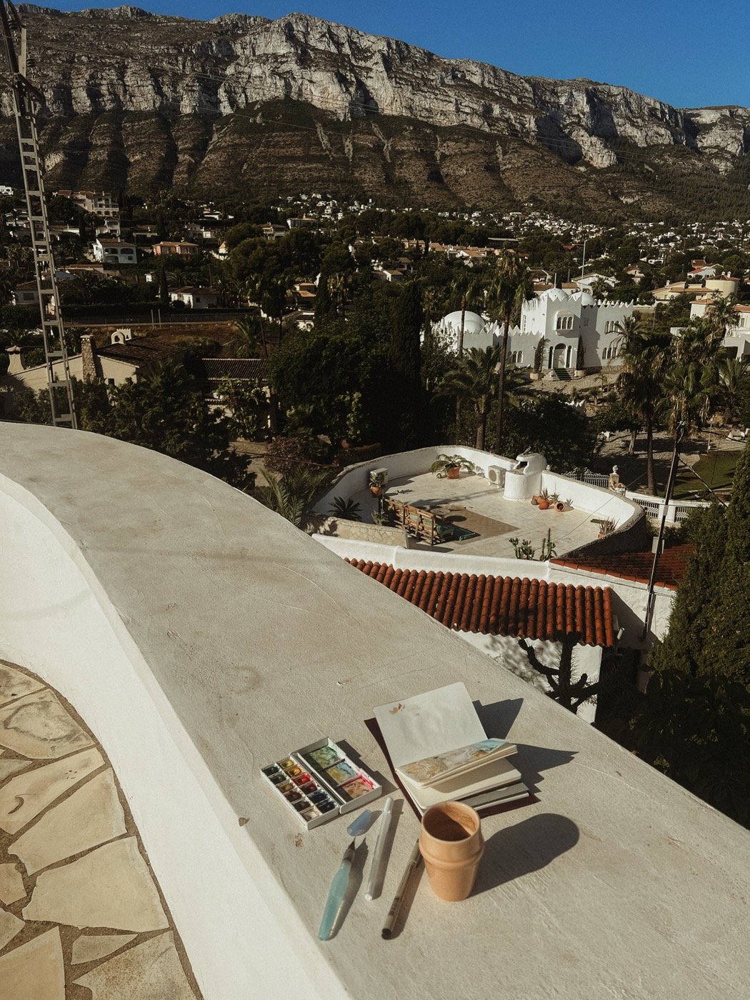
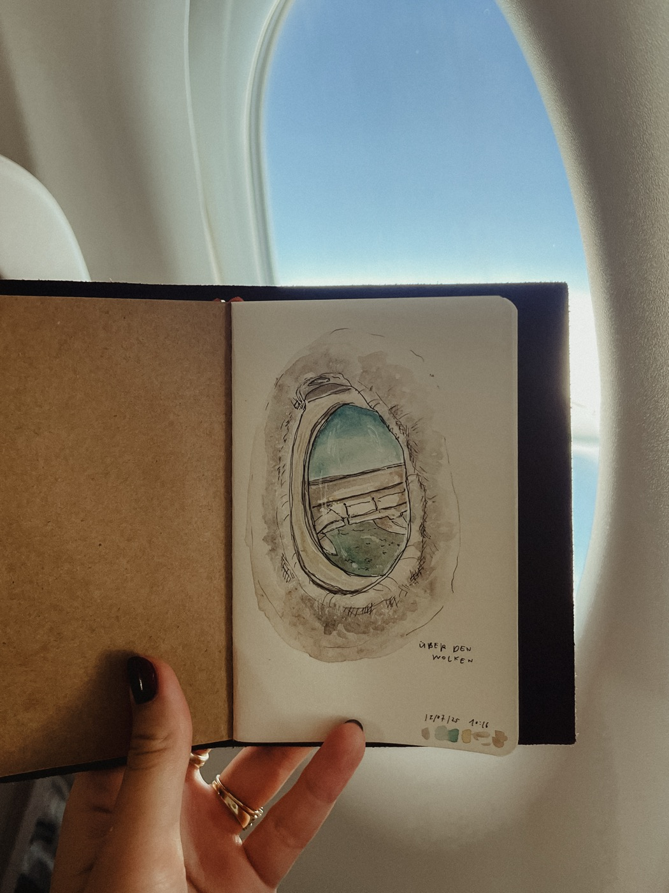
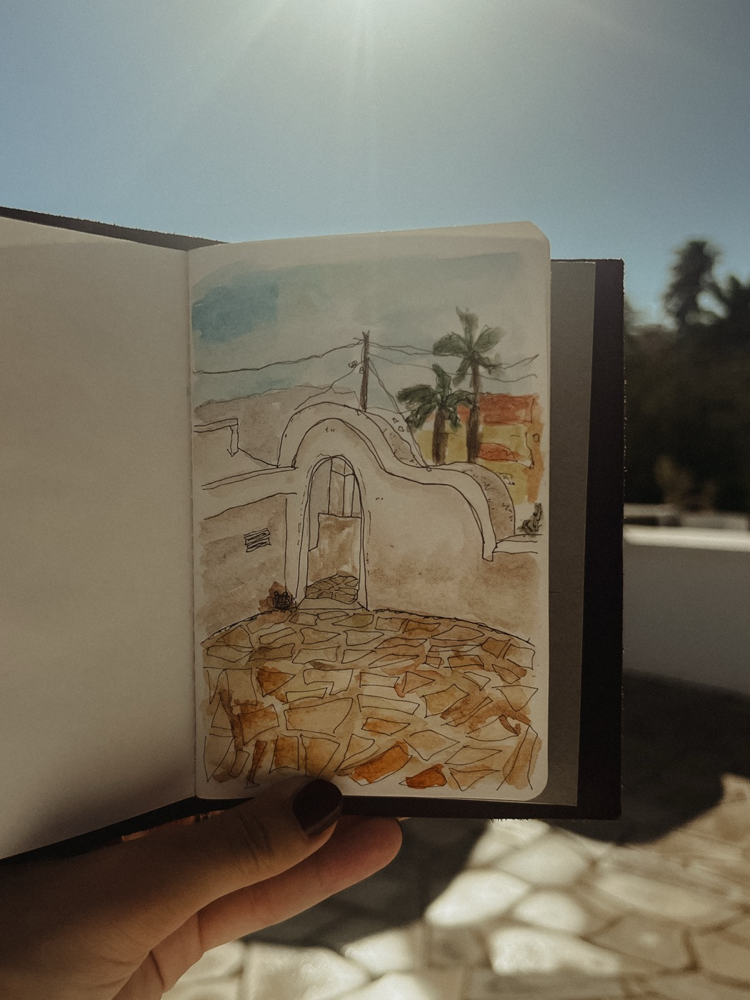
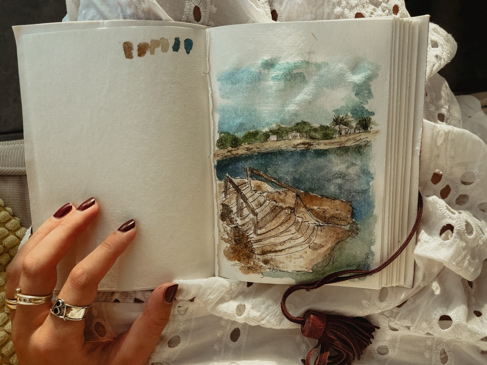
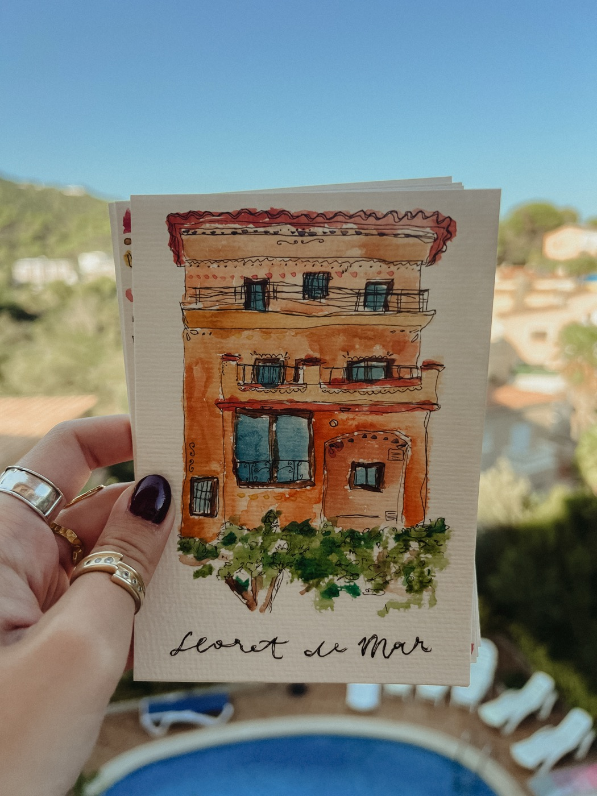
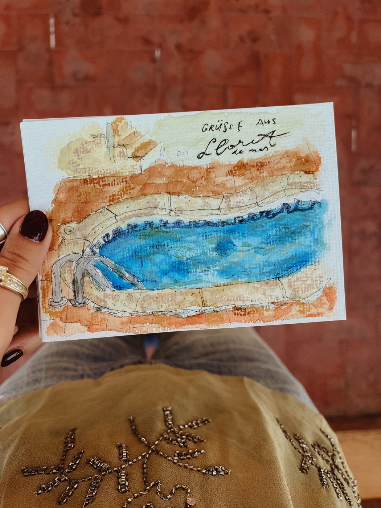
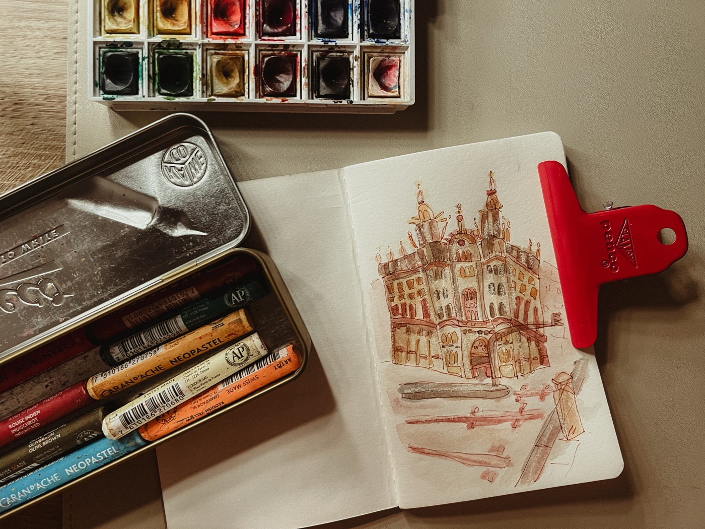
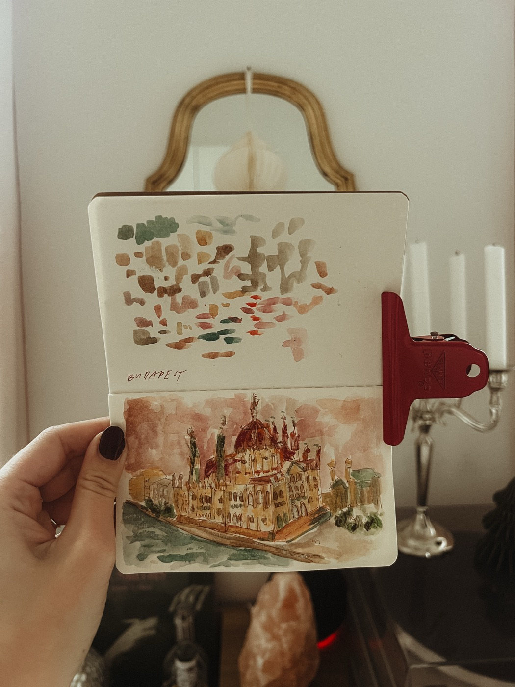
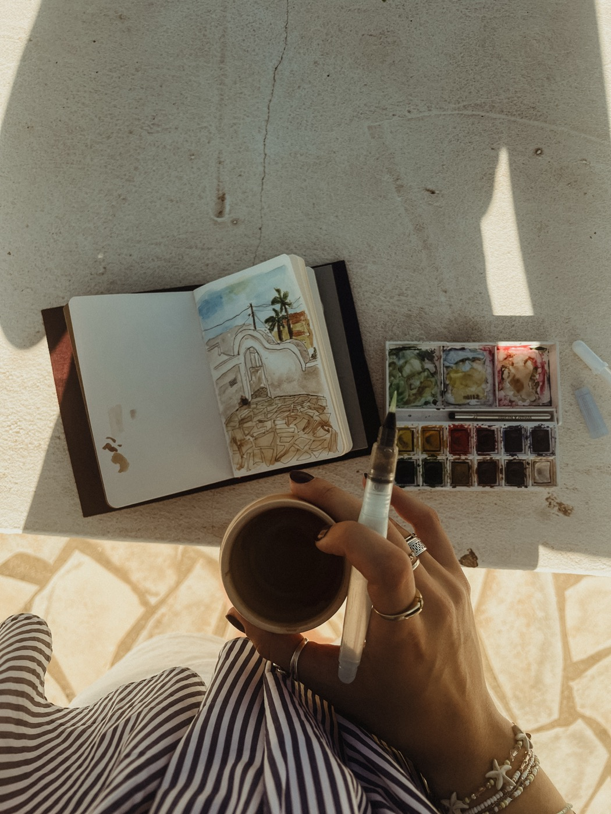

Wenn ich auf Reisen male, verändert sich mein Blick auf die Welt. Ich halte inne, entdecke verborgene Details und fange die Stimmung meiner Reiseziele auf einzigartige Weise ein. Mit einer kompakten Aquarellpalette und meinem Wassertankpinsel im Gepäck wird für mich jeder Ort zu einem kleinen Atelier. Folgende Illustrationen sind aus 2025.








